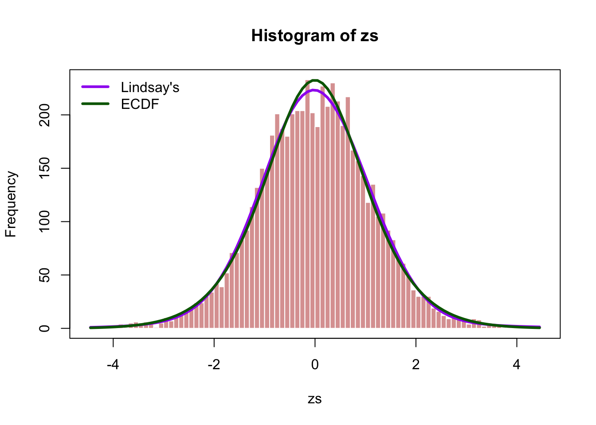
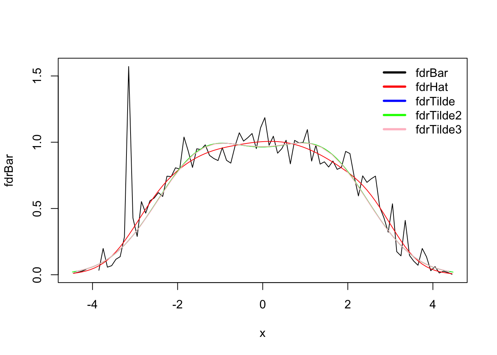

###############
## Table 5.1 ##
###############
# Now try adding back the 2 omitted observations into bin 90:
y[90] # currently 1 observation in bin 90## [1] 1y[90]<- 3
yhat<- glm(y~ns(x,df=df),poisson)$fit # the expected value of Y, i.e. yhat
e0 <- N*d*pi0*dnorm(x) # expected null count
fdrBar <- e0/y
fdrHat <- e0/yhat
table2 <- cbind(k,x,e0,y,fdrBar,yhat,fdrHat) # recreating table 5.1
round(table2[76:83,],3)## k x e0 y fdrBar yhat fdrHat
## 76 76 3.05 2.142 4 0.536 5.961 0.359
## 77 77 3.15 1.571 9 0.175 5.140 0.306
## 78 78 3.25 1.141 8 0.143 4.487 0.254
## 79 79 3.35 0.820 2 0.410 3.966 0.207
## 80 80 3.45 0.584 4 0.146 3.546 0.165
## 81 81 3.55 0.411 4 0.103 3.203 0.128
## 82 82 3.65 0.287 4 0.072 2.920 0.098
## 83 83 3.75 0.198 1 0.198 2.685 0.074# Now the table (specifically column yhat) matches book perfectly.
#################################
## Recreate Figure 5.2: ##
## local fdr for prostate data ##
#################################
## fdrHat vs midpoints x
#plot(x,fdrHat,xlab="midpoints x_k",ylab="estimated local fdr fdrHat",lwd=2,type="l")
#abline(v=0,lty="dotted")
#abline(h=0.2, col="grey")
####
# f<- glm(y~ns(x,df=df),poisson)
# predict(f,type="link")
# l<- log(f)
# D <- (y - f)/(f + 1)^0.5 # standardizing
# D <- sum(D[2:(K - 1)]^2)/(K - 2 - df) # sum of Poisson deviances: measure of discrepancy between observed and fitted valuehist(zs, breaks = 90, col = "#ad000070",border = "white")
lines(mp, yhat, col = "purple", lwd = 3)
lines(mp, nhat, col = "darkgreen", lwd = 3)
box()
legend("topleft", c("Lindsay's","ECDF"), lwd = 3, col = c("purple","darkgreen"), bty = 'n')
ytilde <- nhat
fdrtilde <- e0/ytilde
table3 <- cbind(table2, ytilde, fdrtilde)
round(table3[76:83,],3)## k x e0 y fdrBar yhat fdrHat ytilde fdrtilde
## 76 76 3.05 2.142 4 0.536 5.961 0.359 7.314 0.293
## 77 77 3.15 1.571 9 0.175 5.140 0.306 6.155 0.255
## 78 78 3.25 1.141 8 0.143 4.487 0.254 5.168 0.221
## 79 79 3.35 0.820 2 0.410 3.966 0.207 4.330 0.189
## 80 80 3.45 0.584 4 0.146 3.546 0.165 3.619 0.161
## 81 81 3.55 0.411 4 0.103 3.203 0.128 3.018 0.136
## 82 82 3.65 0.287 4 0.072 2.920 0.098 2.511 0.114
## 83 83 3.75 0.198 1 0.198 2.685 0.074 2.084 0.095plot(x, fdrBar, type = "l")
lines(x,fdrHat, col="red")
lines(x, fdrtilde, col="blue")
legend("topright", c("fdrBar","fdrHat", "fdrTilde"), lwd = 3, col = c("black","red", "blue"), bty = 'n')